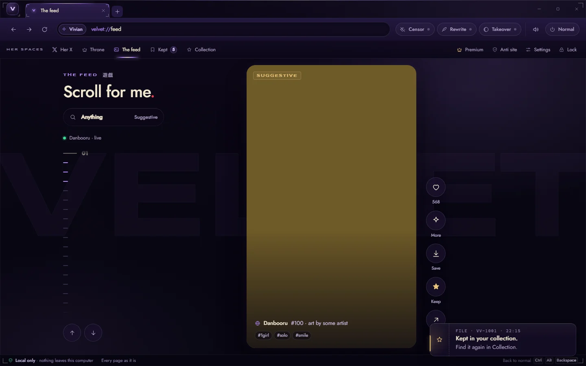
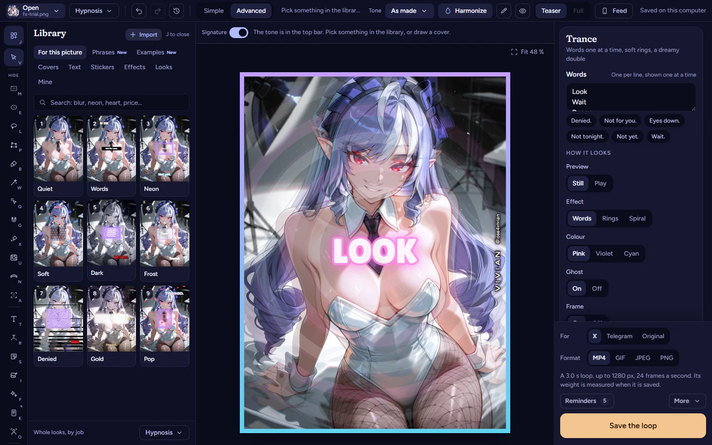
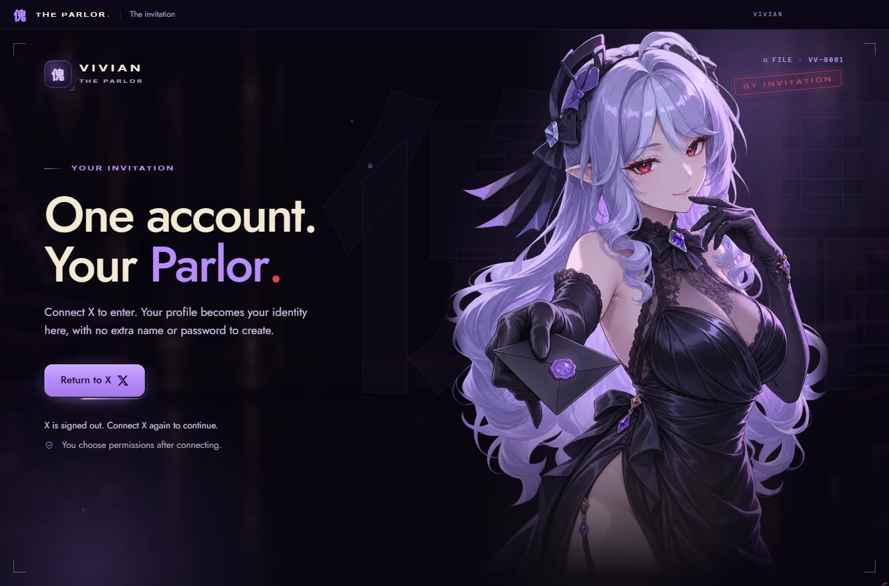

AI studio Chapter 6
Code your own tools
You don’t need to read code to build a tool with an AI. You need a short brief, one small step at a time, your own eyes on every result, and a journal. Here’s the method, then one of my tools as it really is.

In 30 seconds
- Start with a short brief: what the tool does, what it never does, and how you’ll know it works.
- Ask for one small step, run it yourself, look at it, then say what’s wrong in plain words.
- Keep a journal, so a new conversation picks up where the last one stopped.
- Keys, passwords and card numbers never go into the chat or into the code.
- Anything that moves money gets tested with fake money first, and it needs a limit, a total and a stop.
You will learn
- How to write a brief an AI can build from.
- The loop of asking, running, looking and correcting.
- What a project journal holds and why it matters.
- How Vivian’s Autodrain works, and where it falls short of this wiki’s own rules.
- What a safe autodrain looks like, in a simulator with fake money.
I’m not a developer. I build my tools anyway, one small step at a time, and I look at every result before I ask for the next one.
Vivian
Start with a short brief
An AI builds what you describe, so describe it before anything else. Half a page is enough. The brief is also what you’ll compare every result against, so write it in your own words. Vivian’s field notesFirst-hand experience, not a study.
A brief in five lines
What the tool does, in one sentence.
What it never does. For anything near money, say it never sends without a limit.
Where it runs: a web page, a browser extension or a small program on your computer.
What must never fail, such as the stop button.
How you’ll know it’s done: what you’ll see on screen when it works.
Starting from a brief
Example conversation. Invented for this exercise.
You
Here’s my brief. A page that shows three wishlist goals with a progress bar each. It never asks for money and never stores names. Done when I open the file and see three goals with bars. Before you write anything, ask me what’s unclear.
Them
Three questions. Do the goals come from a list you type or from your wishlist page? Should a bar count gifts or amounts? Dark theme, light theme, or both?
You
A list I type. Gifts, not amounts. Dark only.
Them
Clear. Step one is the page with three made-up goals and no styling yet. Open it and tell me what you see.
Asking the AI to list what’s unclear before it writes anything saves you a whole round of fixing the wrong thing. Vivian’s field notesFirst-hand experience, not a study. A monthly chat plan is enough for small tools like this one. See the Budget planner for what each plan costs.
One small step at a time
Big requests come back big and broken, and you can’t tell which part broke. Small steps give you something you can check in a minute. Vivian’s field notesFirst-hand experience, not a study.
The loop
Ask for one step
One screen, one button or one rule. Say which step of the brief it is. Vivian’s field notesFirst-hand experience, not a study.
Run it yourself
Open the page or start the program on your own computer. A step you haven’t run isn’t done, whatever the chat says. Vivian’s field notesFirst-hand experience, not a study.
Look at it
Compare what’s on screen with the brief. Take a screenshot when something looks wrong. Vivian’s field notesFirst-hand experience, not a study.
Say what’s wrong
Describe what you see, not what you guess. “The bar stays empty after I tick a gift” helps more than “the code is broken”. Vivian’s field notesFirst-hand experience, not a study.
Write one line down
Add the date and what changed to your journal before the next step. Vivian’s field notesFirst-hand experience, not a study.
Saying what’s wrong
Example conversation. Invented for this exercise.
You
The bar stays empty when I tick a gift. Screenshot attached. Nothing else changed.
Them
The tick isn’t saved before the bar redraws. I’ll change only that part. Reload and tick the second goal.
You
The second goal works now. The first one still stays empty.
Them
The first goal has a different name in the list than on the page. I fixed the name and nothing else. Try once more.
Ask for the smallest change that fixes the problem, and say what must stay as it is. When a fix breaks something that worked before, go back to the last version that worked and try again from there. Vivian’s field notesFirst-hand experience, not a study.
Keep a journal
Long conversations drift. The model loses track of early decisions, and a new conversation starts from nothing. A journal fixes both: paste it at the top of a new chat and the work picks up where it stopped, even weeks later. Vivian’s field notesFirst-hand experience, not a study.
Three files that keep a project alive
A brief: what the tool does, what it never does and when it’s done.
A plan: the steps in order, each ticked only after you’ve seen it work.
A journal: one entry per session, newest at the top, with what you decided, why, and what you turned down.
The “turned down” part matters more than it looks. Without it, the next conversation suggests the same rejected idea again. Vivian’s field notesFirst-hand experience, not a study.
Keep secrets out
Everything on the list in Pick your AI applies twice over when you code, because code gets copied, shared and uploaded. A key or a password pasted into the chat can end up written into the code. Vivian’s field notesFirst-hand experience, not a study.
Keeping a key out
Example conversation. Invented for this exercise.
You
The tool needs my API key. Should I paste it here so you can put it in the code?
Them
No. Keep it out of this chat and out of the code. I’ll make the tool ask for the key when it starts, and you’ll type it on your own computer.
Test with made-up names and fake money. A tool that moves money gets built and tested against a copy or a test mode first, and it pays nothing until its stop works. Vivian’s field notesFirst-hand experience, not a study. Safe design has the full routine, and Check a tool before you install it is the same list from the other side.
What I built this way
Everything below came out of that loop: a short brief, one small step at a time, a look at the result, then the next step. I didn’t write the code by hand, and you don’t need to read it to judge a tool. You judge it by what it does on screen. Vivian’s field notesFirst-hand experience, not a study.
Three of my own apps



Velvet, the editor of my image tool and my Hub, The Parlor. All three were built with an AI, step by step, and none of them shows its code here.Vivian’s field notesFirst-hand experience, not a study.
Example: Vivian’s Autodrain
Vivian’s Autodrain is a Chrome extension I built with this method. It buys a gift from my Throne wishlist again and again, with the card of the sub who installs it. Vivian’s field notesFirst-hand experience, not a study.
Its popup has a Drain button, a level bar and three modes. Dumb sends a USD 5 gift, Addicted a USD 10 gift and Surrender a USD 20 gift, and no price is shown on screen. The stronger the mode, the more its switch moves and glows. Vivian’s field notesFirst-hand experience, not a study.
While it runs, my wishlist page plays effects: a spiral, images of me, short lines of text one at a time, faint clips with their sound and an ambient track. Every USD 10 paid adds a level, and levels unlock image sets: Normal from the start, Censor at level 2, Armpits at level 6 and Feets at level 10. Vivian’s field notesFirst-hand experience, not a study.
It loops through the checkout on its own: empty the cart, add the gift, check out, pick the card, press Pay Now, start again. It never types a card. If no card is ready after 10 seconds, it pauses and waits for the sub to press Pay Now by hand. A payment with an unknown result, or a bank check, stops everything and says why. Vivian’s field notesFirst-hand experience, not a study.
There’s no server and no account. Everything stays in the sub’s browser. The effects follow the reduced-motion setting and never flash more than three times a second. Surrender takes two clicks and locks the modes. Only removing the extension stops it. Vivian’s field notesFirst-hand experience, not a study.
It started from a one-page brief and a plan of eight steps. The first step was reading the real checkout page without paying anything, and every payment test ran on a copy of that page. Vivian’s field notesFirst-hand experience, not a study.
Measured against this wiki’s own Safe design rules, it falls short in three places. There’s no running total on screen, only levels. There’s no limit the sub sets before starting. And Surrender has no stop: only removing the extension ends it. That’s how it is today, and I’m telling you so you can judge it the way you’d judge anyone else’s tool. Vivian’s field notesFirst-hand experience, not a study.
A platform’s rules apply to any tool you point at it. Throne’s help pages say the wishlist can’t be used to exchange goods or services. VerifiedChecked against the original source.What types of items can I add to my wishlist? (opens in a new tab) Accessed 3 November 2026. They also say a profile can’t offer content or services in exchange for gifts. VerifiedChecked against the original source.What’s allowed in my profile text and images? (opens in a new tab) Accessed 3 November 2026. Read the rules of the platform before you build for it. Vivian’s field notesFirst-hand experience, not a study.
Try a safe autodrain
Here’s the same idea built the other way round. It runs on fake money, asks for your limit first, shows the total all the time, and stops at the limit by itself. Vivian’s field notesFirst-hand experience, not a study.
Simulator, fake money
A safe autodrain, with fake money
Set it before you start. While it runs you can lower it, never raise it.
SpentUSD 0.00
LimitUSD 50.00
Fake walletUSD 200.00
Not running.
Ready. Set your limit, pick a gift, then press Start.
Try the stop in every state: before you start, while it runs, while it’s paused and after it ends. Then lower the limit while it runs and watch it stop.Vivian’s field notesFirst-hand experience, not a study.
Esc stops it too. If you leave the page, it pauses. Nothing here is bought, saved or sent.
This simulator needs JavaScript, which is off in this browser.
Count what happened. With a USD 50 limit and the USD 20 gift, it sends two gifts and stops at USD 40, because a third would pass the limit. A real tool would also take the total from the payment provider, which a page can’t do. Vivian’s field notesFirst-hand experience, not a study.
It works, says the chat
An AI writes a whole autodrain in one answer and says it’s ready. You haven’t run it yet.
- One real payment is a test you can’t take back. And you haven’t seen the stop work yet.
- Right. “It’s ready” in a chat proves nothing. What you’ve seen working does.
- A second look from the same chat isn’t a test. Run it and look.
Remember it
- Write a short brief first, in your own words.
- One step, run it, look, say what’s wrong.
- Keep a journal with what you decided and what you turned down.
- No keys or card numbers in the chat or the code.
- Anything with money gets fake money first, then a limit, a total and a stop.
What you did.
Check it
Every claim with its evidence level and its sources.
Evidence levels
- Verified
- Checked against the original source.
- Reported
- Stated by a serious secondary source read in full.
- Community
- Widely said in the scene; no document proves it.
- Vivian’s field notes
- First-hand experience, not a study.
- Unverified
- Plausible, not proven yet.
Half a page is enough.
Vivian’s field notesFirst-hand experience, not a study.
The brief is also what you’ll compare every result against, so write it in your own words.
Vivian’s field notesFirst-hand experience, not a study.
Asking the AI to list what’s unclear before it writes anything saves you a whole round of fixing the wrong thing.
Vivian’s field notesFirst-hand experience, not a study.
Big requests come back big and broken, and you can’t tell which part broke.
Vivian’s field notesFirst-hand experience, not a study.
Small steps give you something you can check in a minute.
Vivian’s field notesFirst-hand experience, not a study.
Say which step of the brief it is.
Vivian’s field notesFirst-hand experience, not a study.
A step you haven’t run isn’t done, whatever the chat says.
Vivian’s field notesFirst-hand experience, not a study.
Take a screenshot when something looks wrong.
Vivian’s field notesFirst-hand experience, not a study.
“The bar stays empty after I tick a gift” helps more than “the code is broken”.
Vivian’s field notesFirst-hand experience, not a study.
Add the date and what changed to your journal before the next step.
Vivian’s field notesFirst-hand experience, not a study.
Ask for the smallest change that fixes the problem, and say what must stay as it is.
Vivian’s field notesFirst-hand experience, not a study.
When a fix breaks something that worked before, go back to the last version that worked and try again from there.
Vivian’s field notesFirst-hand experience, not a study.
Show all 42 claims
The model loses track of early decisions, and a new conversation starts from nothing.
Vivian’s field notesFirst-hand experience, not a study.
A journal fixes both: paste it at the top of a new chat and the work picks up where it stopped, even weeks later.
Vivian’s field notesFirst-hand experience, not a study.
Without it, the next conversation suggests the same rejected idea again.
Vivian’s field notesFirst-hand experience, not a study.
Everything on the list in Pick your AI applies twice over when you code, because code gets copied, shared and uploaded.
Vivian’s field notesFirst-hand experience, not a study.
A key or a password pasted into the chat can end up written into the code.
Vivian’s field notesFirst-hand experience, not a study.
A tool that moves money gets built and tested against a copy or a test mode first, and it pays nothing until its stop works.
Vivian’s field notesFirst-hand experience, not a study.
Everything below came out of that loop: a short brief, one small step at a time, a look at the result, then the next step.
Vivian’s field notesFirst-hand experience, not a study.
You judge it by what it does on screen.
Vivian’s field notesFirst-hand experience, not a study.
All three were built with an AI, step by step, and none of them shows its code here.
Vivian’s field notesFirst-hand experience, not a study.
It buys a gift from my Throne wishlist again and again, with the card of the sub who installs it.
Vivian’s field notesFirst-hand experience, not a study.
Dumb sends a USD 5 gift, Addicted a USD 10 gift and Surrender a USD 20 gift, and no price is shown on screen.
Vivian’s field notesFirst-hand experience, not a study.
The stronger the mode, the more its switch moves and glows.
Vivian’s field notesFirst-hand experience, not a study.
While it runs, my wishlist page plays effects: a spiral, images of me, short lines of text one at a time, faint clips with their sound and an ambient track.
Vivian’s field notesFirst-hand experience, not a study.
Every USD 10 paid adds a level, and levels unlock image sets: Normal from the start, Censor at level 2, Armpits at level 6 and Feets at level 10.
Vivian’s field notesFirst-hand experience, not a study.
It loops through the checkout on its own: empty the cart, add the gift, check out, pick the card, press Pay Now, start again.
Vivian’s field notesFirst-hand experience, not a study.
If no card is ready after 10 seconds, it pauses and waits for the sub to press Pay Now by hand.
Vivian’s field notesFirst-hand experience, not a study.
A payment with an unknown result, or a bank check, stops everything and says why.
Vivian’s field notesFirst-hand experience, not a study.
Everything stays in the sub’s browser.
Vivian’s field notesFirst-hand experience, not a study.
The effects follow the reduced-motion setting and never flash more than three times a second.
Vivian’s field notesFirst-hand experience, not a study.
Only removing the extension stops it.
Vivian’s field notesFirst-hand experience, not a study.
The first step was reading the real checkout page without paying anything, and every payment test ran on a copy of that page.
Vivian’s field notesFirst-hand experience, not a study.
And Surrender has no stop: only removing the extension ends it.
Vivian’s field notesFirst-hand experience, not a study.
That’s how it is today, and I’m telling you so you can judge it the way you’d judge anyone else’s tool.
Vivian’s field notesFirst-hand experience, not a study.
Throne’s help pages say the wishlist can’t be used to exchange goods or services.
VerifiedChecked against the original source.What types of items can I add to my wishlist? (opens in a new tab) Accessed 3 November 2026.What types of items can I add to my wishlist? (opens in a new tab)Archive (opens in a new tab)Accessed 3 November 2026
They also say a profile can’t offer content or services in exchange for gifts.
VerifiedChecked against the original source.What’s allowed in my profile text and images? (opens in a new tab) Accessed 3 November 2026.What’s allowed in my profile text and images? (opens in a new tab)Archive (opens in a new tab)Accessed 3 November 2026
Read the rules of the platform before you build for it.
Vivian’s field notesFirst-hand experience, not a study.
It runs on fake money, asks for your limit first, shows the total all the time, and stops at the limit by itself.
Vivian’s field notesFirst-hand experience, not a study.
Then lower the limit while it runs and watch it stop.
Vivian’s field notesFirst-hand experience, not a study.
With a USD 50 limit and the USD 20 gift, it sends two gifts and stops at USD 40, because a third would pass the limit.
Vivian’s field notesFirst-hand experience, not a study.
A real tool would also take the total from the payment provider, which a page can’t do.
Vivian’s field notesFirst-hand experience, not a study.